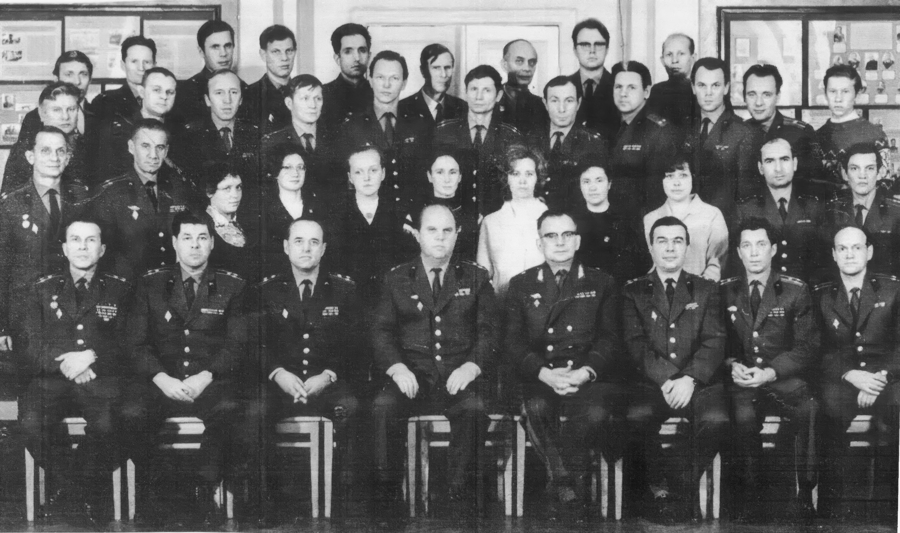
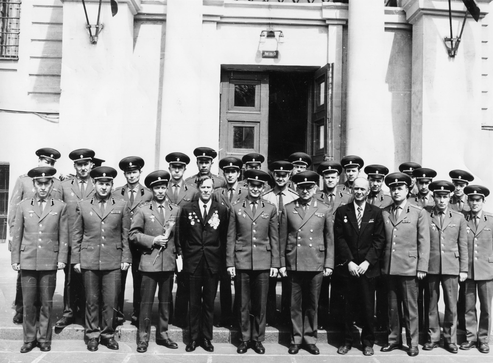
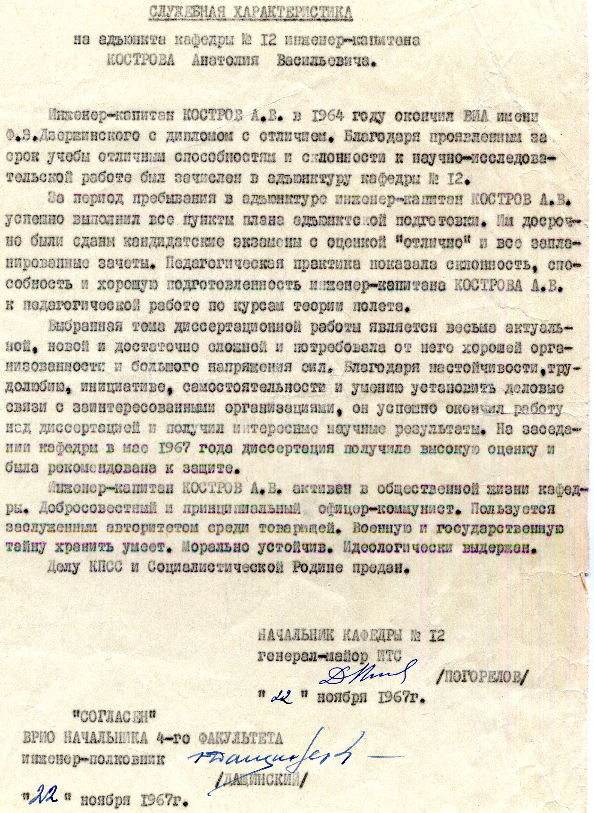
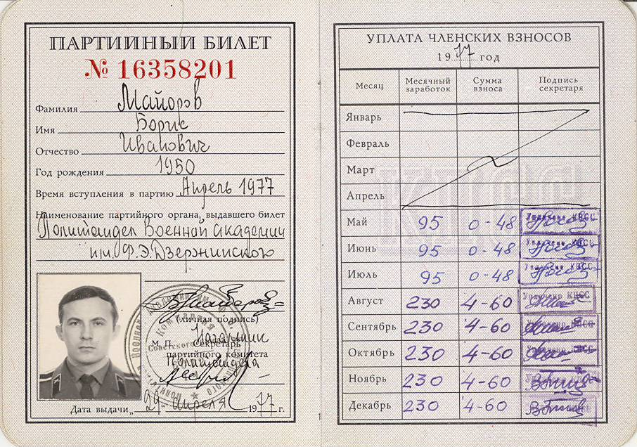
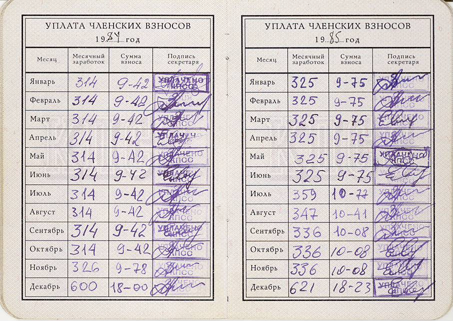

50 лет со дня основания кафедры баллистики, 1972 год. Начальник кафедры генерал-майор Погорелов Д.А.
Кафедра баллистики в 1970-е годы
Люди содержались в бедности. Денег не хватало до получки, квартиры не более 5 м на человека. В этих условиях политотдел повязывал всех какой-то неведомой преданностью делу КПСС. Примерно такую же характеристику на меня написали в 1985 году, когда представляли на майорскую должность. Характеристику я подписал. Так как Родине был предан, а против дел партии тогда не возражал. Не знаю, что писали полковникам и генералам. Может быть "предан до последней капли крови"? Однако всё это мало вязалось с баллистикой и было от неё очень и очень далеко. Фото с сайта Кострова А.В. - гражданина России , лётчика-истребителя и ракетчика-баллистика http://www.kostrov-av.ruПримечание:

В столовой ГШ РВСН преданных делу партии генералов, офицеров, прапорщиков и гражданский персонал обслуживали официантки, хлеб с горчицей и солью бесплатно лежал на столах, а на 1 рубль можно было пообедать. Наверно ещё рубль с полтиной у меня уходил на завтрак и ужин.
Итого: 75 рублей на питание, 30 рублей за наём комнаты у платформы Перхушково. Жена подрабатывала на 90 рублей в месяц, а дочь водили в детсад за 10 рублей в месяц. Младший офицер с семьёй жил от получки до получки.

После присвоения мне майорского звания и объявления Горбачёвым перестройки в стране, жизнь не стала лучше. Мне молодому майору приходилось ездить за каждым гвоздём в Москву, чтобы привести в порядок только что полученную квартиру. Через 10 лет офицерской карьеры в 1987 году я смог освободиться от многих бытовых проблем, но нагрянул кризис, который втянул меня в свою воронку.